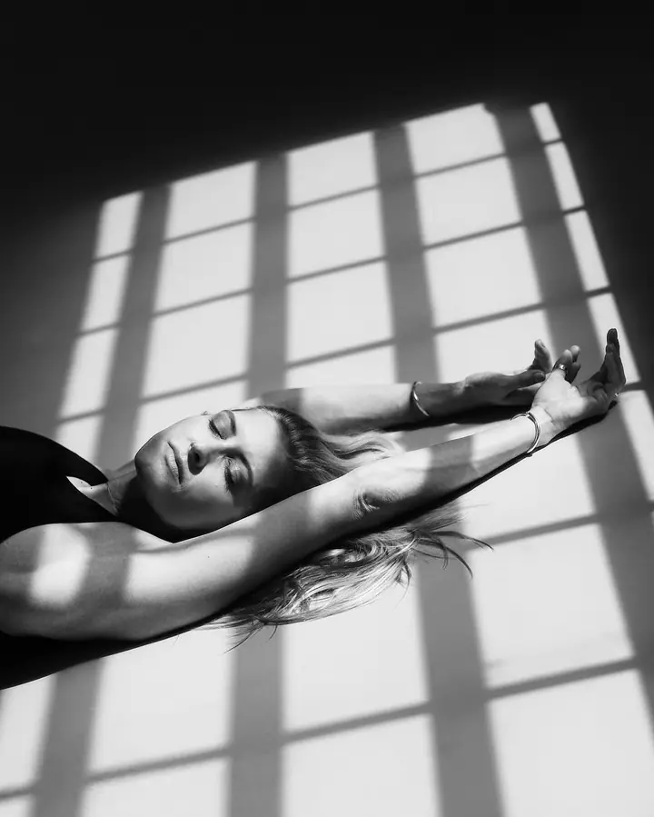
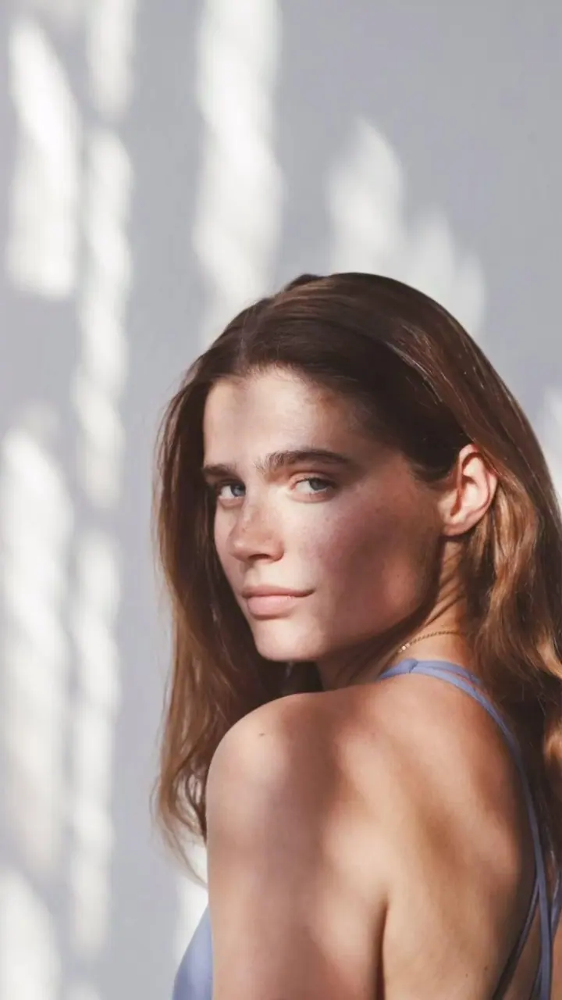

Jóga a pohyb
Fotím lekce, lektory a jógová studia v přirozeném světle. S komunitou Yoga Movement spolupracuji jako jejich fotografka.

Fotografka jógy, portrétů a produktů
Jmenuji se Eliška Pechová a v Praze fotím jógu, portréty a produkty pro značky. Pracuji s denním světlem a stíny z oken a tvořím intuitivně a s lehkostí.
Zeptat se na termín
Fotím lekce, lektory a jógová studia v přirozeném světle. S komunitou Yoga Movement spolupracuji jako jejich fotografka.
Klidné portréty v jemném denním světle, ve kterých můžete být sami sebou. Během focení vás navedu, jak se postavit a kam se dívat.
Fotím akce, lekce pod širým nebem a komunitní setkání. Zachytím atmosféru celé akce i drobné detaily.
Jmenuji se Eliška a fotím v Praze. Nejvíc mě baví přirozené světlo a jemná atmosféra, proto si pro focení vybírám místa s velkými okny, kde se světlo a stíny dají skládat do obrazu.
K focení přistupuji intuitivně. Ráda si s vámi nejdřív povídám, abyste se před objektivem cítili uvolněně. Když nevíte, jak se postavit, navedu vás, ale zároveň se nebráním vašim nápadům.
Fotím jógu a pohyb, portréty, produkty i značky a události. Pro komunitu Yoga Movement jsem se stala jejich fotografkou a pro malé značky fotím produkty od keramiky po dárkové sady.
Pošlete mi pár vět o tom, co chcete fotit a k čemu fotky budete potřebovat. Ozvu se vám co nejdříve.
Domluvíme se na stylu, termínu a místě. Hledám prostory s dobrým denním světlem, které se k vašemu focení hodí.
Fotíme v klidu a s lehkostí. Povídáme si, smějeme se a já vás podle potřeby navádím.
Fotky vyberu a upravím v jednotném jemném stylu. Když budete mít připomínky, ráda je zapracuji.
Vůbec ne. Během focení vás navedu, jak se postavit a kam se dívat, a hlavně se snažím, abyste se cítili pohodlně.
Fotím v Praze, nejraději v prostorech s velkými okny a přirozeným světlem. Na místě se domluvíme podle toho, co fotíme.
Ano. Fotím lekce, lektory i větší akce pod širým nebem, třeba pro komunitu Yoga Movement.
Ano, fotím produkty i brandové fotky. Předem si ujasníme, jaký styl hledáte, aby fotky ladily s vizuálem vaší značky.